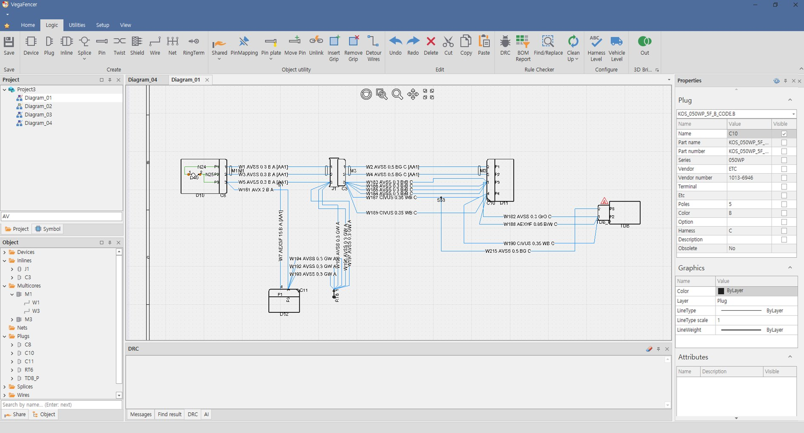
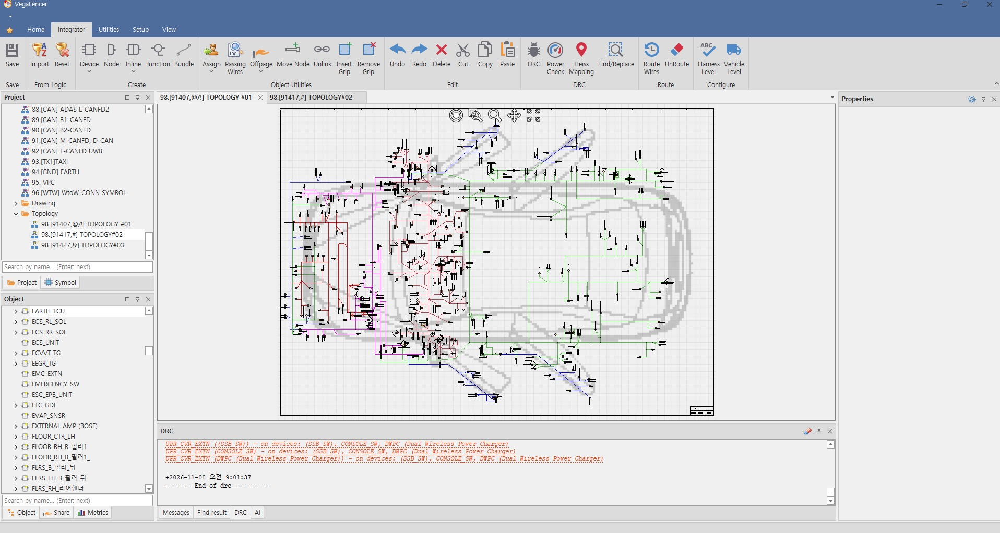
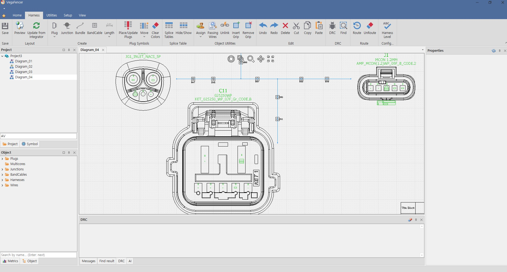
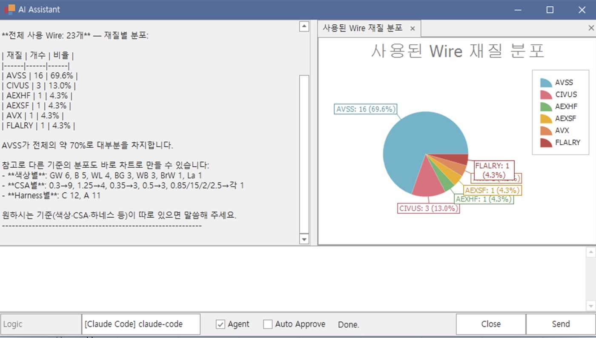

Software for Vehicle E/E Architecture·Wiring Harness Design
VegaFencer는 물리 레이아웃과 설계 의도를 하나로 맞춰, 설계부터 구현까지 신뢰할 수 있는 연결을 완성합니다.
OVERVIEW
회로도부터 하네스 도면까지, 통합 E/E 엔지니어링 플랫폼
VegaFencer의 실제 제품 화면을 직접 확인하세요. 자세히 보기




IMPACT
측정 가능한 설계 혁신